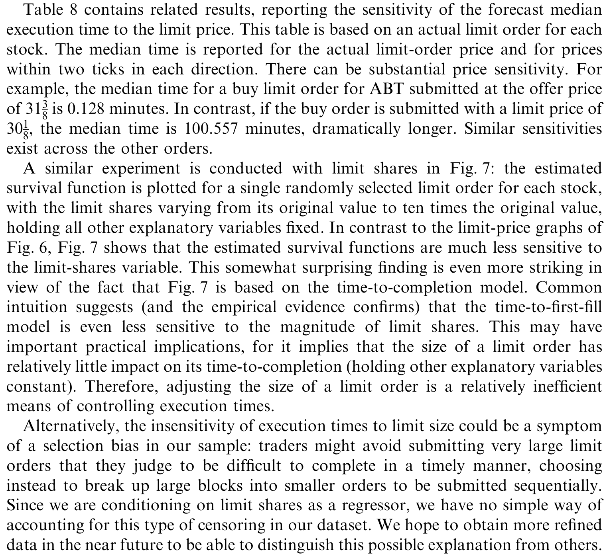
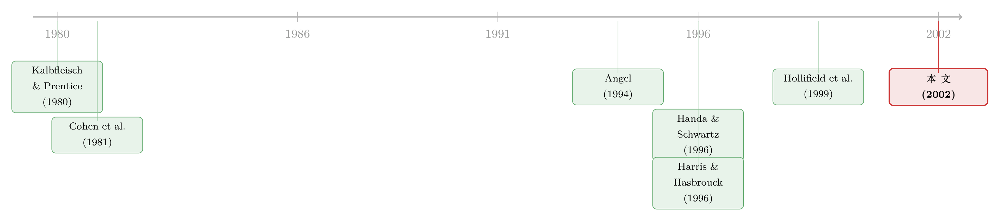

挂单要等多久才成交？——别再用「股价碰一下」来糊弄自己
本文读的是 Lo, MacKinlay & Zhang (2002, Journal of Financial Economics)：作者用生存分析 (survival analysis) 和真实的限价订单数据，第一次把「限价单要等多久才成交」建成一个可估计的计量模型。核心结论有两条——执行时间对限价高度敏感、对订单规模几乎不敏感；而此前人们偷懒用的两种「假成交」（理论上的布朗运动首达时间、经验上从成交数据反推）都是糟糕的代理，会系统性地把执行时间算错。
1 一个谁都遇到过、却没人算清的问题
如果你做过股票交易，一定挂过限价单。它的好处一句话就能说清：没有价格风险——只在你指定的价格成交，绝不会被市场一口吃在更差的位置。限价订单 (limit order) 占了纽约交易所约 45% 的下单量（Harris and Hasbrouck, 1996），它甚至悄悄替市场报着价：Chung et al. (1997) 估计有 21% 的报价完全来自限价订单簿，专家做市商根本没插手。
但这份「没有价格风险」的好处，是要付学费的。成交不被保证，而且——到底要等多久才成交，是个随机变量。它取决于你挂的价格、挂的股数、当时的盘口、市场的波动，甚至取决于你不知道的私有信息。对有些交易，这点等待无所谓；对另一些，等待的机会成本能大到吃掉全部收益。
于是一个再自然不过的问题摆在面前：给定我现在挂出的这张单子，它的执行时间服从什么分布？ 任何想在「挂限价单」和「直接打市价单」之间做量化权衡的人，都绕不开这个问题。
可奇怪的是，在这篇论文之前，几乎没有人直接去建这个分布。大家都在抄近路。
2 两条诱人的捷径
第一条捷径是理论的。既然股价是个随机过程，那就把它写成几何布朗运动 (geometric Brownian motion)：
$$dP(t) = \mu\,P(t)\,dt + \sigma\,P(t)\,dW(t)$$
限价单成交，不就是股价第一次「碰到」限价这条边界吗？这正是随机过程里经典的首达时间 (first-passage time) 问题。取对数、用伊藤引理，得到一个带漂移的算术布朗运动：
$$d\ln P(t) = \Big(\mu - \tfrac{1}{2}\sigma^2\Big)\,dt + \sigma\,dW(t)$$
令 \(a = \ln(L/P(0))\) 为对数意义下「现价到限价」的距离（卖单 \(a>0\)，买单 \(a<0\)），\(\nu = \mu - \tfrac12\sigma^2\) 为漂移。那么首达时间 \(\tau\) 的密度就是一个逆高斯分布 (inverse Gaussian distribution)：
$$f_\tau(t) = \frac{|a|}{\sigma\sqrt{2\pi t^3}}\,\exp\!\left(-\frac{(a-\nu t)^2}{2\sigma^2 t}\right)$$
这套数学很漂亮——它和障碍期权 (barrier option) 的定价用的是同一套首达时间工具（关于把公司价值写成「随时可能碰到边界」的框架，可参见《公司随时都可能倒下，期权定价却只盯着还债那一天》）。它甚至「自带」了一个不成交的概率：当漂移把价格往远离边界的方向推时，
$$\Pr(\tau < \infty) = \exp\!\left(\frac{2\nu a}{\sigma^2}\right) < 1$$
也就是说，单子有可能永远碰不到限价。看上去，连「成交不被保证」都建模进去了。
第二条捷径是经验的，由 Handa and Schwartz (1996) 提出。原理一模一样，只是把布朗运动换成真实的成交数据：翻历史的逐笔成交，看价格什么时候第一次「穿过」你的限价，那一刻就算它成交了。不需要任何模型假设，简单粗暴。
两条捷径都有「简单」这个巨大的优点。问题是——它们对吗？
3 真正关键的一步：把执行时间当成「失效时间」
论文真正的洞见，是换了一个看问题的角度。
限价单的执行时间有三个特征：它非负、它随机、它有时间次序。这三个词放在一起，统计学里早有一门成熟的工具专门对付它——生存分析 (survival analysis)，也就是研究「失效时间」「寿命」的那套理论（Kalbfleisch and Prentice, 1980；Cox and Oakes, 1984）。一张限价单从挂出到成交，和一台机器从开机到故障、一个病人从确诊到……，在数学上是同一类对象。
生存分析的两块基石是生存函数 (survival function) \(S(t)=\Pr(T>t)\) 和危险率 (hazard function)：
$$\lambda(t) = \frac{f(t)}{S(t)},\qquad S(t) = \exp\!\left(-\int_0^t \lambda(u)\,du\right)$$
\(\lambda(t)\) 的直觉是：「已经等到了第 \(t\) 分钟还没成交，下一瞬间成交的条件强度有多大」。把限价、规模、盘口价差、波动率这些解释变量塞进 \(\lambda(t)\)，就能得到条件执行时间分布。这正是论文要估的东西。
但生存分析能进来，靠的不是它名字好听，而是它能干一件其他方法干不了的事：处理删失 (censoring)。
一张单子，可能在成交之前就被投资者取消、修改了，也可能因为「有效期」到了而过期。这些单子，从没真正成交过。诱惑在于——把它们当成废数据扔掉算了，它们好像没告诉我们任何关于「成交要多久」的信息。
但这恰恰是最大的陷阱。 一张在第 30 分钟被取消的单子，确确实实告诉了你一件事：它「存活」了至少 30 分钟而没成交。这是关于执行时间分布的真信息。生存分析把这件事写进了似然函数里——这就是全文方法论的核心方程：
\(\delta_i\) 是成交指示变量：成交记 1，删失记 0。一个被删失的观测不贡献密度，而贡献「活过 \(t_i\)」的整段生存概率。忽略删失观测，会严重地、系统性地扭曲条件分布的估计。 这一步，是前面两条捷径都做不到的——它们的世界里只有「成交了」，没有「等了很久最后放弃」。
4 数据：一份被时间戳追踪到底的订单
要估这个模型，得有真正记录了「取消/过期」的数据，而不只是成交记录。论文用的是 Investment Technology Group（ITG）提供的限价订单库：1994 年 8 月到1995 年 8 月，标普 500 里市值最大的 100 只股票，共 375,998 张限价单。每张单子从提交到终结都被打上时间戳，全程追踪——它什么时候被部分成交、被取消、被修改、被过期，一笔不漏。
几个值得记住的事实：
- 单子数量从 DWD 的
1,160张到 GE 的11,298张不等；卖单里卖空占了大头（32.83%），因为卖空受「上涨报价规则」约束、动态不同，作者把它们剔除，此后「卖单」只指纯卖单。 - 大约一半的单子至少被部分成交，
37.47%被完全成交，30.51%在第一次成交就完成（POOL 口径）。 - 大多数完成的单子一次就成交完：
81.42%一次完成，只有约1%需要七次以上。这也是为什么论文把模型拆成到首次成交 (time-to-first-fill) 和到完全成交 (time-to-completion) 两套——它们性质差别很大。
而最先冒出来、也最顽固的一个经验规律是：买单系统性地比卖单慢。POOL 的到首次成交均值，买单约 27.92 分钟、卖单约 11.30 分钟（标准差分别高达 54.91 和 26.84 分钟，离散度惊人）。原因藏在挂单行为里：平均而言，卖单挂得离买价更近，买单挂得离卖价更远——卖方比买方更在乎「赶快成交」这件事。一个细节，背后是一整套策略性下单（关于限价订单簿如何在策略博弈中形成，可参见《买卖价差为什么会「自己长回去」？》）。
5 反转：两条捷径，错得很离谱
铺垫到这里，论文最有分量的一击才落下。作者把同一批单子，分别用「真实成交时间」和「假成交时间」算一遍，正面对质。
结论是：理论的首达时间也好，经验的成交数据反推也好，都是真实执行时间的糟糕代理。 偏差严重到让「假成交」根本不能用来判断限价单的执行情况。
为什么会错得这么离谱？因为两条捷径都默认了一件根本不成立的事——「股价碰到限价 = 单子成交」。可现实里：
- 价格穿过你的限价时，前面排着队。限价订单簿讲价格优先、时间优先，价格碰到不代表轮到你。
- 真实的单子会被取消和修改——那
30%+被删失的观测，捷径完全视而不见。捷径的世界里没有「等不及而走人」，而真实世界里这是常态。 - 真实的下单是策略性、内生的：人们在「等待风险」和「立即成交风险」之间权衡着挂单，挂单价格本身就携带了私有信息。一条外生的布朗运动路径，捕捉不到这层选择。
换句话说，捷径量的是「价格的运动」，而真正决定成交的是「订单的命运」——而订单的命运里写满了排队、取消与策略，这些恰恰被首达时间假设抹掉了。这就是为什么必须回到真实订单、必须用生存分析、必须把删失算进来。
6 主要结果：敏感于价格，麻木于规模
把模型估出来，最醒目的两个结论，也是摘要里点名的：
第一，执行时间对限价高度敏感。 你把限价往「贵」的方向挪一点（买单挂得更低、卖单挂得更高），等待时间会迅速拉长。这与首达时间的几何直觉一致——离边界越远，越难碰到——但量级和形状只有用真实数据才量得准。论文给出的执行时间预测中位数对各解释变量的敏感性，集中报告在表 8：限价是主导变量，盘口价差与市场波动率也显著影响成交快慢。

Table 8: contains related results, reporting the sensitivity of the forecast median
第二，也更反直觉：执行时间对订单规模几乎不敏感。 按朴素直觉，挂一万股当然比挂一百股难成交。但在这份以机构订单为主的数据里，规模的边际作用很弱。一个合理的解读是：在这些最大、最活跃的股票上，深度足够厚，规模不是约束成交的瓶颈；真正卡住你的，永远是你愿不愿意在价格上让步。
这两条合在一起传递了一个干净的信息：限价单的执行时间，是可以被精确建模、因而可以被控制的。 这意味着 Angel (1994)、Harris (1994)、Hollifield et al. (1999) 等人描述的那些策略性下单方案，在实践中是有数据支撑、可落地的，而不只是黑板上的理论。
7 文献脉络
把这篇论文放回它生长的土壤里看，会更清楚它补的是哪一块。
最早，限价订单是作为理论对象进入视野的：Cohen et al. (1981) 讨论交易成本与下单策略，Glosten (1994) 追问「电子化的公开限价订单簿是否不可避免」——这一脉关心的是限价单在价格发现中的角色、与市价单的互动、做市商的位置。但它们几乎都不在连续交易的环境里，对「执行时间」这个问题帮不上太多忙。

接着，一批研究开始直接碰执行概率：Angel (1994) 在一串很强的假设下推出了限价单成交概率的解析式；Hollifield et al. (1999) 干脆搭了一个纯限价订单市场的结构模型，去估下单策略。与此并行，一批经验研究在比较限价单与市价单的盈亏：Harris and Hasbrouck (1996) 用 TORQ 数据发现某些情形下限价单能省成本，Handa and Schwartz (1996) 则用成交数据构造「假成交」来评估限价单收益——而正是后者这套「假成交」方法，成了本文要正面批判的靶子。
本文的位置，因此非常清楚：它不是又一个限价单理论，也不是又一次盈亏比较；它把统计学里成熟的生存分析（Kalbfleisch and Prentice, 1980；Cox and Oakes, 1984）第一次搬进市场微观结构，直接建模执行时间的条件分布，并用真实订单证明了此前流行的代理方法靠不住。它既是方法上的引入，也是对一条捷径的「证伪」。
8 评论与延伸（Q&A + 研究方向）
(a) 几个可能的疑问
Q：执行时间不就是个非负的连续变量吗？为什么不能直接拿它对各变量做 OLS 回归，非要搬出生存分析？
因为你的样本里有一大批根本没成交的单子（取消/过期），它们没有「执行时间」可言。OLS 要么把它们扔掉、要么瞎填一个数，两种做法都会让估计严重有偏——扔掉等于只看「成交得了的」那群，是典型的选择偏差。生存分析的删失似然 \(\mathcal{L}=\prod f(t_i)^{\delta_i}S(t_i)^{1-\delta_i}\) 正是为这件事造的：未成交的单子贡献「至少存活到 \(t_i\)」的概率，信息不被浪费。
Q：「对规模不敏感」太反直觉了。大单难道不该更难成交？
在这份数据里确实不敏感，但要看清适用范围：样本是标普 500 最大的 100 只股票、且以机构订单为主。这些票深度厚、流动性好，规模远没到顶住盘口的程度。真正决定成交快慢的是你在价格上让多少步。换到小盘股、或一次性砸进相对深度很大的单子，规模的作用很可能回来——这是个值得单独检验的边界。
Q：首达时间模型那么漂亮，连「永不成交」都建进去了，到底差在哪？
差在它假设「价格碰到限价 = 成交」。可现实里限价订单簿有价格优先、时间优先的排队，价格碰到不等于轮到你；更要命的是它没有「取消/修改」这件事，而真实样本里三成以上的单子是这样终结的。首达时间量的是价格路径，真实执行量的是订单在排队与策略中的命运，两者系统性地对不上。
Q：被删失的订单（取消、过期）真有信息？直接扔掉省事，差别能有多大？
有，而且差别是「定性」级别的。一张第 30 分钟被取消的单子，等价于一次观测到「执行时间 > 30 分钟」的事件。把这类观测全扔掉，等于只用「成交快的」那部分样本去估分布，会把整体执行时间系统性地低估。论文反复强调：忽略删失会戏剧性地扭曲条件分布的估计量。
Q：买单为什么会系统性地比卖单慢这么多（约 28 分钟 vs 11 分钟）？
不是买单「天生」难成交，而是人挂得不一样。数据显示卖单平均挂得离买价更近，买单挂得离卖价更远——卖方更在意立即出手，买方更愿意为更好的价格多等。慢，是策略选择的结果，不是市场对买单有偏见。
Q：ITG 全是机构订单，结论能推广到散户、推广到整个市场吗？
要打折扣。作者自己很坦诚：ITG 客户几乎全是机构和经纪商，几乎看不到散户的小单、零股单，而且部分订单来自 POSIT 撮合后的「残单」，带着「缺流动性」的印记；它的条件信息也比普通 TORQ 单更丰富。所以这是「一类交易者」的执行时间，不是市场的平均。作者的态度也很明确：希望别人把同样的方法用到自己的数据上做对照。
(b) 几个可能的研究问题与提案
1. 把生存分析搬到公司债的成交执行上。 【经济故事】公司债是询价 (RFQ)、电话撮合为主的场外市场，「挂出一个意愿价、等多久能成交」同样是核心问题，而且删失（询价无果、撤单）比股票更普遍。把执行时间建成带删失的失效时间，能直接刻画信用市场的「执行流动性」。 【可行性】中。TRACE 有逐笔成交但缺「未成交的意愿」，需要拿到交易商层面的报价/询价数据（如某些电子平台的 RFQ 日志）才能识别删失，数据门槛是主要障碍。
2. 外资 vs. 本地投资者的限价单执行时间差异。 【经济故事】如果外资真有「信息劣势」，他们的限价单是不是挂得更保守、等得更久、被删失得更多？把执行时间按投资者国籍分层估计，是对「外资是否吃亏」的一个全新、且基于微观行为的检验。 【可行性】高。首尔交易所 (KRX) 这类带投资者身份标签的限价订单簿是现成的，识别策略干净（关于这一辩论，可参见《外资真有「信息劣势」吗？——首尔交易簿里那 37 个基点的真相》）。
3. 把「删失信息」做成一个流动性指标。 【经济故事】既然未成交的单子携带「存活了多久」的信息，那么一只股票（或一只债）的取消率与平均存活时间本身，就是一把流动性的尺子，而且它度量的是「下单后的执行难度」，与价差、深度这些静态指标互补。 【可行性】中。需要全订单生命周期数据；难点是把这个新指标与既有流动性度量做横向比较、证明它有增量信息。
4. 用机器学习预测执行时间、并反推最优下单。 【经济故事】本文把执行时间建成可估计的条件分布，下一步自然是：给定目标，求「挂什么价、等多久、何时转市价单」的最优策略。把生存模型的预测中位数嵌进一个动态下单优化里，是从「描述」走向「控制」的关键一跳。 【可行性】中到高。高频限价订单数据已不稀缺；挑战在于策略的内生性——你的下单本身会改变订单簿，需要谨慎处理反馈。
5. 在信用/利率市场系统检验「首达时间代理」的偏误。 【经济故事】本文证明了在股票里首达时间是糟糕代理。结构化信用模型、可转债、障碍型衍生品里大量用首达时间近似「触发事件」，那里的偏误有多大、方向如何，是个干净且有现实意义的问题。 【可行性】中。需要把模型隐含的首达时间与真实触发事件（违约、转股、敲出）对齐，数据可得但事件样本可能偏少。
9 我的判断
这篇论文的贡献是「方法 + 证伪」的双重组合，而且两件事都做得很扎实。方法上，把生存分析引入限价单执行，第一次让「执行时间分布」成为一个可以条件化、可以估计、可以预测的对象，且优雅地解决了删失这个被所有捷径回避的硬骨头——这个框架的生命力，二十多年后在高频和算法交易里依然清晰可见。证伪上，它用同一批数据正面把「首达时间 / 成交数据反推」这两条流行捷径按在地上，证明它们是糟糕代理，等于替整个领域清掉了一条看似便宜、实则误导的路。
对识别，我有两点保留。其一是样本的代表性：结论建立在 100 只最大股票、几乎全是机构订单的 ITG 数据上，「对规模不敏感」很可能正是「这些票太厚」的产物，外推到小盘股或散户要非常小心，作者自己也承认了这一点。其二是内生性：下单价格、规模、是否取消，全是投资者基于私有信息的内生选择，生存模型估的是「给定这些选择之后」的条件分布，并没有打开「人为什么这样挂、为什么取消」这个黑箱——而那恰恰是策略性下单理论最关心的地方。
后续我最想看到的，是把这套删失似然搬到外资持有人与公司债流动性的交叉地带：在一个删失更普遍、信息不对称更强的市场里，「挂出去要等多久、最后等没等到」这件事，也许比价差更能讲清楚谁在为流动性买单。
参考文献
Angel, J. (1994). Limit versus market orders. Working Paper No. FINC-1377-01-293, Georgetown University.
Chung, K., Van Ness, B., Van Ness, R. (1997). Limit orders and the bid–ask spread. Working paper, University of Memphis.
Cohen, K., Maier, S., Schwartz, R., Whitcomb, D. (1981). Transaction costs, order placement strategy and existence of the bid–ask spread. Journal of Political Economy 89(2), 287–305.
Cox, D., Oakes, D. (1984). Analysis of Survival Data. Chapman & Hall, New York.
Glosten, L. (1994). Is the electronic open limit order book inevitable? Journal of Finance 49(4), 1127–1161.
Handa, P., Schwartz, R. (1996). Limit order execution. Journal of Finance 51(5), 1835–1861.
Harris, L., Hasbrouck, J. (1996). Market vs. limit orders: the SuperDot evidence on order submission strategy. Journal of Financial and Quantitative Analysis 31(2), 213–231.
Hollifield, B., Miller, R., Sandås, P. (1999). An empirical analysis of a pure limit order market. Working paper, University of Pennsylvania.
Kalbfleisch, J., Prentice, R. (1980). The Statistical Analysis of Failure Time Data. Wiley, New York.
Lo, A., MacKinlay, C., Zhang, J. (2002). Econometric models of limit-order executions. Journal of Financial Economics 65(1), 31–71.